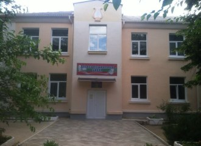
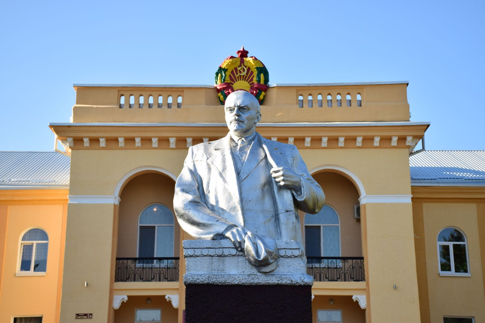
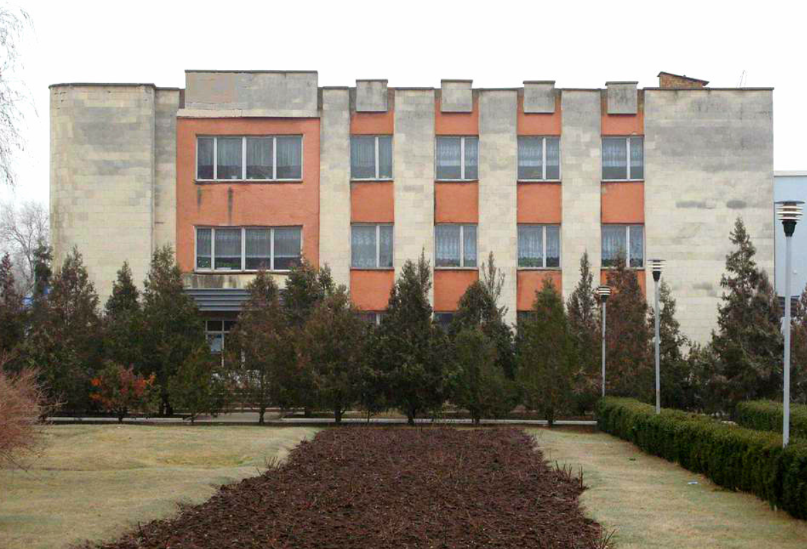
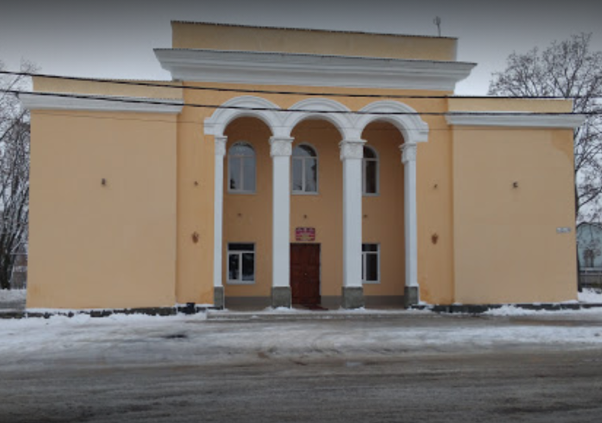
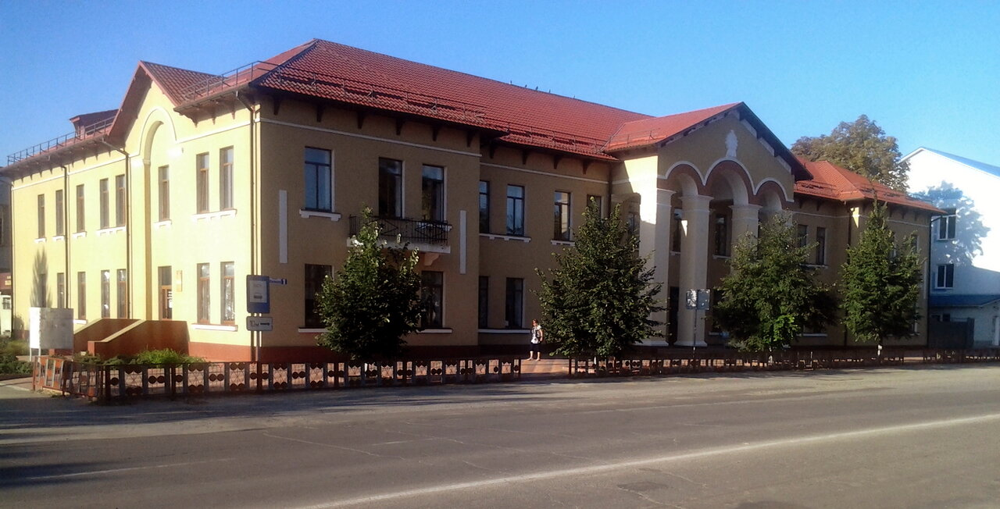
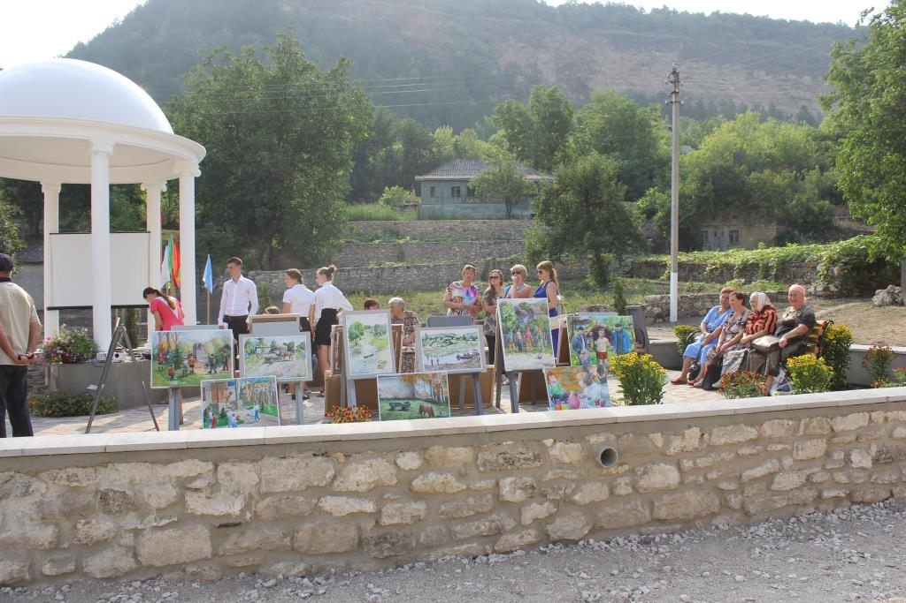
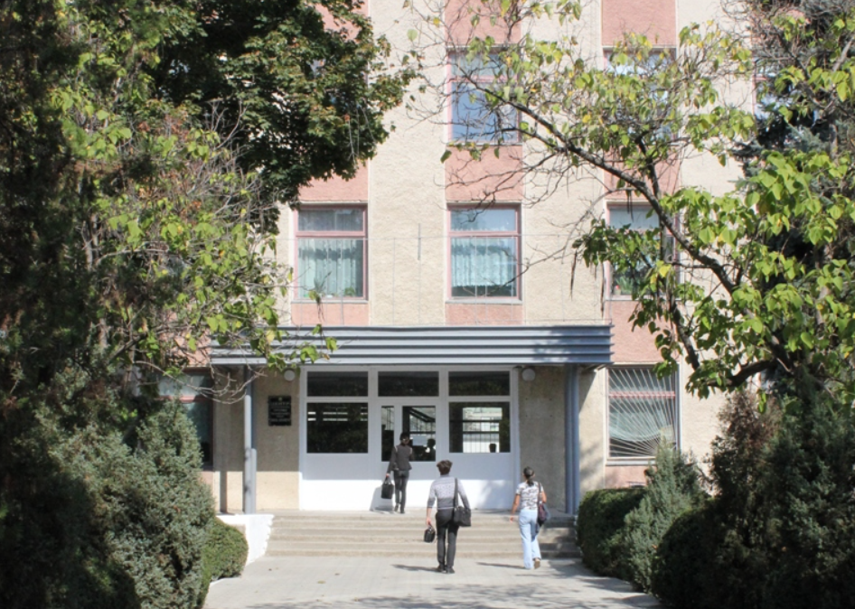
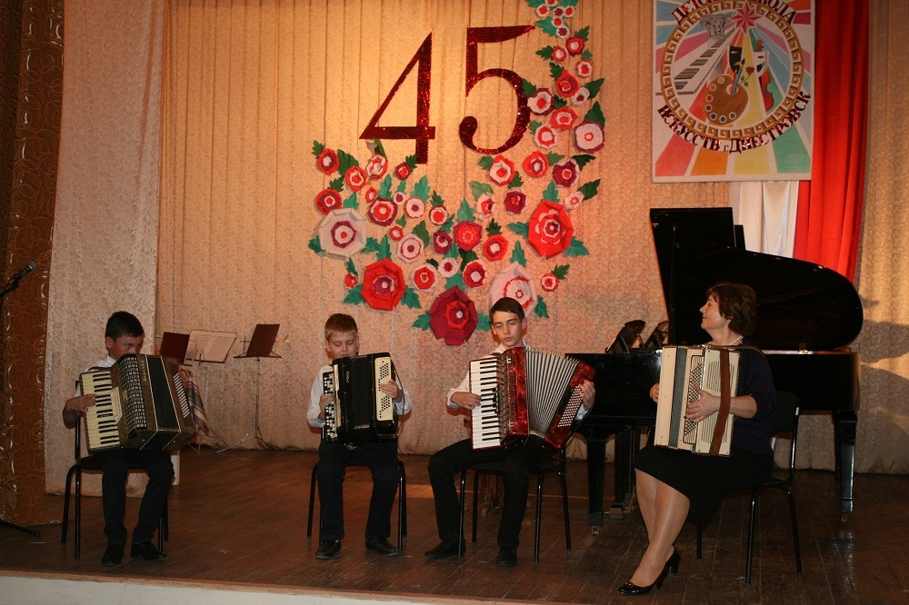

Образовательные учреждения
Высшие учебные заведения в г.Тирасполь


ПГУ им. Т.Г.Шевченко
ПГУ – правопреемник Тираспольского государственного педагогического института, основанного в 1930 году. Будучи первым высшим учебным заведением Советской Молдавии, институт занимался подготовкой педагогических кадров, крайне востребованных в то время. Приднестровский университет славится десятками поколений ученых, преподавателей и студентов, которые внесли достойный вклад в развитие науки, образования, культуры и общественно-политической жизни государства. Проходят десятилетия, меняются поколения выпускников, и каждое из них преумножает значение и авторитет Alma mater.
Сегодня ПГУ – это классический университет исследовательского типа с трёхуровневой системой образования, главным вектором которого является учебно-воспитательная, научно-исследовательская и инновационная деятельность. Основа современной концепции развития нашего вуза - это подготовка высококвалифицированных, конкурентоспособных специалистов, внедрение существующих и разработка новых информационно-коммуникационных технологий для учебной и научной работы, постоянная модернизация научно-исследовательской деятельности и дальнейшая интеграция в евразийское образовательное, научное и информационное пространство.
ВОЕННЫЙ ИНСТИТУТ ИМ. ГЕНЕРАЛ-ЛЕЙТЕНАНТА А. И. ЛЕБЕДЯ
Военный институт Министерства обороны ПМР является государственным военным образовательным учреждением высшего профессионального образования.Форма получения образования – очная, обучение осуществляется на русском языке. Кроме того, Военный институт осуществляет подготовку офицеров запаса из числа студентов-мужчин обучающихся на дневном отделении ПГУ им. Т.Г. Шевченко в возрасте до 27 лет. Учебный процесс включает теоретический и практический курсы обучения, а также учебный сбор при Военном институте. Подготовка осуществляется по трем военно-учетным специальностям.
Выпускникам (курсантам) Военного института Министерства обороны ПМР и студентам ПГУ им. Т.Г. Шевченко, прошедшим полный курс военного обучения, учебные сборы (стажировку) и сдавшим Государственные комплесные экзамены (выпускные экзамены), присваивается офицерское воинское звание “лейтенант”.


ПРИДНЕСТРОВСКИЙ ГОСУДАРСТВЕННЫЙ ИНСТИТУТ ИСКУССТВ ИМ. А. Г. РУБИНШТЕЙНА
ГОУ ВПО «Приднестровский государственный институт искусств им. А.Г. Рубинштейна», основанный в 1959 году как музыкальное училище, сегодня – единственный вуз в Приднестровской Молдавской Республике, осуществляющий образовательную деятельность по программам дополнительного, профессионального среднего и высшего образования в области художественного творчества, музыкального исполнительства и хореографии, социально-культурной деятельности. Плодотворную деятельность основных звеньев работы – учебной, научной, творческой и концертной – обеспечивает плеяда талантливых педагогов.
ТИРАСПОЛЬСКИЙ МЕЖРЕГИОНАЛЬНЫЙ УНИВЕРСИТЕТ
В настоящее время НУО ВППО "Тираспольский межрегиональный университет" является ключевым звеном в составе негосударственного сектора образовательной системы Приднестровья".
За это время ректорату, профессорско-преподавательскому составу и сотрудникам университета удалось создать и запустить программу непрерывного профессионального образования (СПО- ВПО), что дало, в свою очередь, возможность обеспечить подготовку и выпуск специалистов, легко адаптирующихся к системе мировых экономических и правовых связей, а также обусловило преемственность образовательного процесса и возможность получения высшего образования по сокращенной программе.

ТИРАСПОЛЬСКИЙ ФИЛИАЛ РОССИЙСКОГО НОВОГО УНИВЕРСИТЕТА
Российский новый университет (РосНОУ) включен в сотню лучших российских вузов Московского международного рейтинга вузов «Три миссии университета». Лицензия на право осуществления образовательной деятельности № 2120 от 28.04.2016 г. выдана Федеральной службой по надзору в сфере образования и науки, бессрочно.
Тираспольский юридический институт министерства внутренних дел ПМР им. М. И. Кутузова
В начале 90-х годов с распадом Союза ССР специализированные учебные заведения по подготовке кадров для правоохранительных органов стали частью образовательной системы вновь провозглашенных суверенных государств. В тоже время в молодой Приднестровской Республике остро стал вопрос о подготовке специалистов для органов внутренних дел.
В институте постоянно осуществляется подготовка курсантов по специальности «Правоохранительная деятельность» со специализацией «административно-правовая» и «оперативно-розыскная деятельность».

Средние специальные учреждения в г.Тирасполь
ПРИДНЕСТРОВСКИЙ КОЛЛЕДЖ ТЕХНОЛОГИЙ И УПРАВЛЕНИЯ
Государственное образовательное учреждение среднего профессионального образования «Приднестровский колледж технологий и управления» образовано Приказом министра просвещения Приднестровской Молдавской Республики от 30.05.2019 года № 493 «О реорганизации государственного образовательного учреждения «Тираспольский колледж бизнеса и сервиса» и государственного образовательного учреждения «Приднестровский промышленно-экономический техникум» в форме слияния.
В настоящее ГОУ СПО «Приднестровский колледж технологий и управления» – это современная организация профессионального образования, в которой впервые в Приднестровской Молдавской Республике внедрились элементы практико-ориентированного (дуального) обучения, где комбинируется теоретическое обучение на базе учебного заведения и практическое обучение на производственном предприятии.
ПРОМЫШЛЕННО-СТРОИТЕЛЬНЫЙ ТЕХНИКУМ
Техникум является правопреемником всех прав и обязательств Государственного образовательного учреждения «Тираспольский строительный лицей» и Государственного образовательного учреждения начального профессионального образования «Тираспольский машиностроительный лицей».
Техникум предлагает: Современные аудитории и мастерские, общежитие для проживания иногородних, спортивный комплекс и тир, одноразовое питание для обучающихся.
РЕСПУБЛИКАНСКИЙ КАДЕТСКИЙ КОРПУС
Вопрос о необходимости создания специализированного учреждения возник на пороге двухтысячных годов. Молодое государство нуждалось в подготовке профессиональных кадровых офицеров. В 2002 г. руководством МВД ПМР было принято решение об организации кадетского отделения при Тираспольском высшем юридическом колледже. В этом же году Правительство ПМР приняло Положение о кадетской школе-интернате. Главной задачей учебного заведения стала подготовка несовершеннолетних граждан к профессиональному служению в Органах внутренних дел Приднестровской Молдавской Республики.
Современный этап развития образования характеризуется возникновением новых типов образовательных учреждений, отдельное место среди которых занимают кадетские корпуса. Важную роль в организации кадетских корпусов сыграло возрождение лучших традиций, обычаев. Модель становления и развития воспитательной системы кадетского класса предусматривает новое содержание образования, восполняет необходимость мужского воспитания и обучения; военно-патриотическое воспитание, определяет условия для раскрытия и развития индивидуальных особенностей кадет; закладывает основы для подготовки несовершеннолетних граждан к служению отечеству на гражданском и военном поприще.
ТЕХНИКУМ ИНФОРМАТИКИ И ПРАВА
Техникум информатики и права – это система образовательно-развивающего пространства, обновленная временем и усилиями творческих людей, коллектива единомышленников, обладающих профессионализмом и эрудицией. Обучаясь в техникуме, вы вооружитесь не просто знаниями, а умениями адаптироваться к сложным конкурентным условиям рыночной экономики. Профессии юриста и специалиста в области информационных технологий популярны и востребованы в современном деловом мире.
Виды профессиональной деятельности: разработка модулей программного обеспечения для компьютерных систем, интеграция программных модулей, сопровождение и обслуживание программного обеспечения компьютерных систем, разработка, администрирование и защита баз данных.


ТИРАСПОЛЬСКИЙ АГРАРНО-ТЕХНИЧЕСКИЙ КОЛЛЕДЖ ИМ. М. В. ФРУНЗЕ
Государственное образовательное учреждение «Тираспольский техникум информатики и права» имеет соответствующую материально-техническую базу для обучения специалистов в области информационно-коммуникационных технологий и права. Образовательный процесс организован в учебном корпусе. В составе используемых помещений имеются кабинеты, лаборатории, полигоны, мастерская для проведения практических, лабораторных занятий, учебной практики.
Учреждение образовано приказом Госкомитета Совета Министров МССР от 30.08.1974 года №213/183 как городское профессионально-техническое училище № 16 (ГПТУ № 16). ГПТУ № 16 приказом Госкомитета Совета Министров МССР № 263 от 05.09.1984 года переименовано в среднее профессионально-техническое училище № 64 (СПТУ № 64). СПТУ № 64 приказом Министерства народного образования ПМР от 08.02.1993 № 56 года переименовано в Тираспольский лицей-колледж легкой промышленности (ТЛКЛП) с 01.09.1993 года. ТЛКЛП приказом Министерства народного образования ПМР от 14.07.1997 года № 224 переименован в Тираспольский колледж легкой промышленности (ТКЛП) с 15.07.1997 года. ТКЛП приказом Министерства народного образования ПМР от 30.06.1999 года № 245 переименован в ГОУ «Тираспольский техникум информатики и права» с 01.07.1999 года.
ТЕХНИЧЕСКИЙ КОЛЛЕДЖ ИМ Ю. А. ГАГАРИНА
Технический колледж им. Ю.А. Гагарина начал свою деятельность 2 октября 1947г., как специальное ремесленное училище РУ-1, позднее преобразованное в ПТУ-5. В 1961 году ПТУ-5 присвоено имя первого в мире космонавта Юрия Алексеевича Гагарина.
Сейчас, когда вопрос о востребованности в специалистах профессионально-технического образования стоит особенно остро, учебное заведение готовит специалистов с полным средним образованием и профессиональной подготовкой. Обучение проходит на хорошо оснащенной учебной базе, по учебным планам и программам, соответствующим образовательным стандартам Российской Федерации. Для получения практических профессиональных навыков имеется солидная материальная база. Это мастерские (токарная, фрезерная, слесарная, электротехническая), компьютерные классы, лаборатории по каждой учебной дисциплине.

ТИРАСПОЛЬСКИЙ МЕДИЦИНСКИЙ КОЛЛЕДЖ ИМ. Л. А. ТАРАСЕВИЧА
Основной вид деятельности учреждения – образовательная подготовка медицинских работников и фармацевтов среднего звена. На базе ГОУ «Тираспольский медицинский колледж им. Л. А. Тарасевича» функционируют «Курсы специализации и усовершенствования средних медицинских и фармацевтических работников».
Так же на территории колледжа функционируют два музея: «Музей колледжа» и музей молдавской народной культуры «Каса маре». Имеются актовый зал, буфет, библиотека, читальный зал, спортивный и гимнастический зал, медицинский пункт (медицинский кабинет, изолятор, процедурный и зубной кабинеты), зал ЛФК, два компьютерных кабинета, кабинет психологической разгрузки, студенческое общежитие на 213 койко-мест.
ТИРАСПОЛЬСКИЙ ТЕХНИКУМ КОММЕРЦИИ
Техникум располагает технологической и химико-аналитической лабораториями, кабинетами технологического и торгового оборудования кабинетами экспертизы, товароведения продовольственных и непродовольственных товаров, бухгалтерского учета и экономики, менеджмента, организации торговли, компьютерным классом.
Сегодня техникум – многофункциональное заведение. Здесь готовят технологов общественного питания, поваров, кондитеров, официантов-барменов, коммерсантов, менеджеров общественного питания, товароведов-экспертов продовольственных и непродовольственных товаров, бухгалтеров торговли и общественного питания. Обучение ведется по дневной и заочной формам.

ГОУ «Тираспольское Суворовское военное училище»
Тираспольское суворовское военное училище - это военная академия и школа-интернат в частично признанной Приднестровской Молдавской Республике, которая служит военным училищем для молодежи в Вооруженных силах Приднестровья.
21 августа 1943 года было принято Постановление Совета народных комиссаров СССР и ЦК ВКП (б) № 901 « О неотложных мерах по восстановлению хозяйства в районах, освобождённых от немецкой оккупации», согласно которому для устройства, обучения и воспитания детей воинов Красной Армии, партизан Отечественной войны, а также детей советских и партийных работников, рабочих и колхозников, погибших от рук немецких оккупантов в Краснодарском , Ставропольском краях, Ростовской, Сталинградской, Ворошиловградской, Воронежской , Харьковской, Курской, Орловской, Смоленской и Калининской областях было создано девять суворовских военных училищ, типа старых дореволюционных кадетских корпусов, по 500 человек в каждом, всего 4500 человек со сроком обучения 7 лет, с закрытым пансионом для воспитанников.
Высшие учебные заведения в г.Бендеры
Бендерский политехнический филиал ПГУ им. Т.Г. Шевченко
Бендерский политехнический филиал государственного образовательного учреждения «Приднестровский государственный университет им. Т.Г. Шевченко» – социально ориентированное и адаптированное к современным экономическим условиям жизни учебное заведение.
Исторические вехи развития нашего учебного заведения, как подтверждают архивные документы, берут своё начало с 28 декабря 1944 года. Ещё шла Великая Отечественная война, когда Партией была поставлена задача восстановления народного хозяйства.За более чем полувековой период своего существования Бендерский политехнический филиал подготовил более 32 тысяч специалистов, многие из которых занимают руководящие должности, как в республике, так и за её пределами.
МОУ ДО «Рыбницкая детская музыкальная школа им. Ю. Гагарина»
Направления деятельности: музыкальное (фортепиано, скрипка, гитара, медные и духовые инструменты, баян, аккордеон, сольное пение ( вокал )
— отбор детей, имеющих склонности и способности к обучению в избранной области искусства, давать учащимся общее эстетическое образование, воспитывать вкус на лучших образцах современного, классического, русского и зарубежного искусства;
— организация систематического учебного процесса, создание необходимых условий для личностного развития, художественно-эстетического воспитания и профессионального самоопределения детей в возрасте преимущественно от 6 до 18 лет.


МОУ ДО «Рыбницкая детская школа искусств»
Важнейшим направлением своей работы школа считает обеспечение реальных условий эффективного развития и обучения детей, обладающих способностями, для дальнейшего получения профессионального образования в области музыкального, художественного и хореографического искусства, а также формировать у учащихся в процессе обучения умение приобретать и творчески применять полученные навыки и знания. Платных услуг школа не предоставляет.
Педагогический коллектив состоит из 33 преподавателей, и обучаются в школе 330 учащихся. В школе искусств существует три отделения – музыкальное, хореографическое и отделение ИЗО. Музыкальное отделение подразделяется на следующие отделы: фортепианный, струнный, народный, духовой..
Учреждения доп.образования в г.Дубоссары

Музыкальная школа имени Г. Мургу с памятником Ленину
Исполком Дубоссарского Совета народных депутатов 15 апреля 1955 года принял решение открыть детскую музыкальную школу в городе Дубоссары. В июне того же года началось формирование первого набора учащихся. Первыми преподавателями работало всего 4 педагога (Борис Григорьевич Шехтман, Павел Григорьевич Головко , Михаил Евгеньевич Гуцан, Исай Пантелеевич Гынку), а набор составил 15 человек. Директором музыкальной школы был назначен Борис Григорьевич Шехтман. Открытая в послевоенные годы, школа сразу стала центром культурной жизни города, глотком чистого воздуха, местом культурного развития горожан. Школа располагалась в двухэтажном здании по улице Ломоносова, 10, в ней функционировали 2 отделения — дневное и вечернее.
МОУ ДО «ДУБОССАРСКАЯ ДЕТСКАЯ ХУДОЖЕСТВЕННАЯ ШКОЛА»
С момента образования и до 2017 г. было проведено 50 выпусков. Свидетельства об окончании школы получили уже 1380 учащихся. В настоящее время выпускники учатся в СУЗах и ВУЗах ПМР, Молдовы, России, Украины, Румынии, Чехии, США и Белоруссии и других стран. В школе накоплен большой выставочный фонд работ учащихся – около 2000 работ. Ежегодно в нашем городе и за его пределами проводятся экспозиции работ, выполненные в разные годы учениками нашей школы.
Учащиеся нашей школы участвуют в различных школьных, городских, Республиканских и международных конкурсах, где занимают призовые места.
За многолетнюю историю школа зарекомендовала себя как центр изобразительного искусства города Дубоссары, где много лет получают высокую предпрофессиональную подготовку учащиеся, что способствует совершенствованию культурного и эстетического развития нашего города.


Дворец детско-юношеского творчества г. Дубоссары
Дворец Детско - Юношеского творчества (бывший Дом пионеров) был создан 26 октября 1951 года. Первым директором ДП была Нина Анатольевна Стрий. Размещался ДП в небольшом здании по ул. Дзержинского. С 1979 года Дом пионеров скитался по старым зданиям и подвалам.
Дворец Детско - Юношеского творчества (бывший Дом пионеров) был создан 26 октября 1951 года. Первым директором ДП была Нина Анатольевна Стрий. Размещался ДП в небольшом здании по ул. Дзержинского. С 1979 года Дом пионеров скитался по старым зданиям и подвалам.
Учреждения доп.образования в г.Каменка

КАМЕНСКАЯ ДЕТСКАЯ ХУДОЖЕСТВЕННАЯ ШКОЛА
В отличие от общеобразовательных школ, учебный год разделён не на четверти, а на два полугодия. В конце каждого полугодия (начало января и конец мая) проводится итоговый просмотр каждого класса, где аттестационная комиссия в составе из администрации школы и преподавателей оценивает проделанную работу за прошедшее время. Обучающиеся, освоившие в полном объёме образовательные программы, переводятся в следующий класс.
В школе стали традиционными выставки творческих работ учащихся, экспозиции, подготовленные преподавателями. Детские рисунки выполняются в разных техниках - масляная живопись, гуашь, пастель, акрил, витраж, батики в смешанных техниках. В работах учащихся отображается колорит родного края, жизненная правдивость, фольклорной свежестью привлекают работы некоторых учеников, в них ощутимо личное восприятие ученика, индивидуальный почерк. Это и понятно: Каменка - туристический и курортный город, богатый своей историей и расположенный в живописном уголке Приднестровья, где сам воздух пронизан особым лиризмом.
КАМЕНСКАЯ ДЕТСКАЯ ШКОЛА ИСКУССТВ
Муниципальное образовательное учреждение дополнительного образования «Каменская детская школа искусств» ( ранее Каменская детская музыкальная школа) образована по решению исполкома городского Совета в 1969 году. Распологалась по адресу ул.Кирова 266 в здании районного Дома культуры на 2-ом этаже.
Основной целью Каменской детской школы искусств является эстетическое воспитание, музыкальное развитие личности, реализация дополнительных образовательных программ для раскрытия способностей, творческого мышления, для удовлетворения национально-культурных запросов населения.


ДЕТСКАЯ ХУДОЖЕСТВЕННАЯ ШКОЛА С. РАШКОВО
Целью работы ДХШ является начальное художественное образование, включающее в себя эстетическое воспитание, развитие творческого мышления, создание необходимых условий для художественного творчества, личностного роста и профессионального самоопределения учащихся.
Много ярких индивидуальностей открыла РДХШ. Среди выпускников школы работают и продолжают художественную деятельность в различных направлениях: Леонтьев Иван – в г.Киев, Хомицкая Татьяна в Канаде, Бдрашко Татьяна и др.
Учреждения доп.образования в г.Григориополь

МОУ ДО «ШКОЛА ИСКУССТВ ИМ. Т. ГУРТОВОГО»
Григориопольская Детская Музыкальная школа была образована в 1968 году (Приказом Министерства культуры МССР № 283 от 07.06.1968года) и находилась в подчинении районного отдела культуры Дубоссарского района. С первых лет образования в школе обучалось 35 детей, которые занимались на фортепианном и народном отделах, а также в духовом и скрипичном классах. Позже открылся класс гитары.
На музыкальном отделении учащиеся обучаются игре на фортепиано, скрипке, баяне, аккордеоне, гитаре, трубе, саксофоне, а также вокальному искусству эстрады и классическому вокалу. В соответствии с учебным планом изучают теоретические дисциплины: сольфеджио, музыкальную литературу, слушание музыки, историю искусств. Ученики совершенствуют исполнительское мастерство в ансамблях, посещают хор. Ученики хореографического отделения изучают основы народного, классического, современно-бального и эстрадного танца. Учащиеся художественного отделения посещают предметы «Живопись», «Скульптура», «Рисунок», «Композиция», изучают историю изобразительного искусства.
Учреждения доп.образования в г.Днестровск

МОУ ДО «ДЕТСКАЯ ШКОЛА ИСКУССТВ» Г. ДНЕСТРОВСК
МОУ ДО "Детская школа искусств" г. Днестровск предлагает обучение на музыкальных и художественных отделениях. На музыкальном отделении работают классы фортепиано, скрипки, виолончели, аккордеона, баяна и вокала. Художественное отделение обучает основам живописи, рисунка, композиции, изучает историю искусства.
Помимо этих отделений, с 2013 года в ДШИ существует коммерческий проект, созданный как для дошкольников, так и для взрослых. В ДШИ работает высокопрофессиональный педагогический коллектив, из которого большинство преподавателей когда-то сами учились в стенах школы.
Учреждения доп.образования в г.Слободзея

Слободзейская детская музыкальная школа
Отсчет своей истории детская музыкальная школа берет в 1959 году, когда в Слободзее открылось музыкальное училище, одновременно с ним и детская школа.
Важную роль в становлении школы сыграл первый директор Александр Плеян. Он возглавлял школу более 25 лет. Создал очень крепкий коллектив. Некоторые преподаватели работают до сих пор в школе. Их стаж составляет 42-45 лет. За эти годы школа выпустила более тысячи выпускников. Сегодня в уютных классах занимаются 120 юных слободзейцев. У школы есть филиалы в поселке Красное, селе Чобручи. Детей учат играть на фортепиано, скрипке, духовых инструментах. В последние годы функционирует отделение вокального сольного пения.Как рассказала директор учреждения Светлана Вуколова, дети пытаются освоить согласно программе несколько инструментов. «Занимаясь, скажем, в классе фортепиано, они дополнительно выбирают скрипку для того, чтобы охватить еще какой-нибудь инструмент, расширить свой кругозор, свои навыки и умения»- отметила Светлана Ивановна.
МОУ ДО «ДЕТСКАЯ ХУДОЖЕСТВЕННАЯ ШКОЛА Г. СЛОБОДЗЕЯ»
Де́тская музыка́льная шко́ла — музыкальное учебное заведение, в котором дети школьного возраста в свободное от уроков в общеобразовательных школах время дополнительно получают начальные музыкальные знания и навыки. Прививается умение играть в ансамбле, аккомпанировать, сочинять и импровизировать. Преподаются и теоретические дисциплины, такие как сольфеджио и музыкальная литература. Дополнительно могут преподаваться музыкальное моделирование, основы компьютерной аранжировки и запись нотного текста. Занятия по игре на инструменте («по специальности») педагог проводит с каждым учеником индивидуально. Поступление в музыкальную школу предполагает прохождение конкурсного отбора. Распространенной практикой является приглашение к ребенку частного учителя на 1-2 часа в неделю примерно в течение года перед планируемым поступлением для минимальной стартовой подготовки. Во всех музыкальных школах есть также подготовительные классы, где также можно подготовиться к поступлению на основной курс школы.